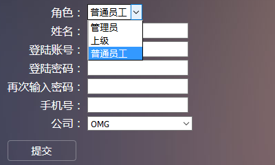

公司人事管理系统
项目介绍
该项目为人员后台管理系统。
借助于Java语言 、MySql数据库、JSP以及My Eclipse开发工具开发的一个公司人事后台管理系统。
该系统的人员角色有三类：Admin（管理员）、Reporter（上级）、Staff（普通员工）。
Admin可以对自己的个人信息进行管理、对员工信息进行管理以及对所有团队/部门/公司进行管理
Reporter可以对自己的个人信息进行管理和对下属的管理。
Staff可以对自己的个人信息进行管理。
1.登陆界面
公司所有员工均从此页面登陆，根据员工的不同角色转入不同的页面。系统也会根据用户的不同操作，做出相应的响应。比如：用户名或密码未输入、密码输入错误等
2.管理员界面
管理员为整个项目的起点，通过该账户可以添加公司、部门、团队以及员工，并可以对员工进行人事调动，管理员可以对自身的信息和登陆密码进行修改。
2.1管理员主界面

2.2管理员添加员工

2.3管理员添加公司、部门、团队
2.4管理员批量指派员工角色
2.5管理员批量指派核实员工信息
对员工的是否在职、以及缺勤原因进行批量管理

2.6管理员管理公司、部门、团队
3.普通员工界面
普通员工可以对自己的个人信息和登陆密码进行管理。查看自己的上级和上级留言。
3.1普通员工主界面
3.2普通员工查看上级界面
3.3普通员工查看上级留言界面
4.上级界面
Reporter可以对自己的个人信息进行管理和对下属的管理。
4.1上级查看下级界面
上级查看自己的下属信息，并可以将所有下属的信息，以表格的形式下载下来。
4.2上级向下级留言界面
5更新个人信息界面
管理员、上级、普通员工均可以修改自己的个人信息。
6更改密码界面
管理员、上级、普通员工均可以修改自己的登陆密码。